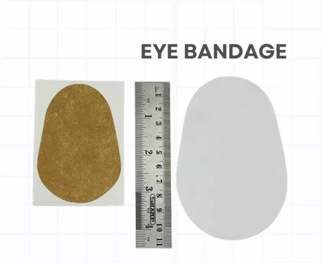

Eye Bandage – Adult comfortable eye dressing designed to protect the eye following surgery, injury, or ophthalmic procedures. Available in white colour.
It provides secure coverage, helps minimise external contamination, and promotes patient comfort during the healing process.
Eye Bandage – Infant is a soft, gentle, and skin-friendly eye dressing specially designed for infants. It offers secure protection following eye treatments or surgical procedures while ensuring maximum comfort for delicate skin and supporting a hygienic healing environment in skin colour.
